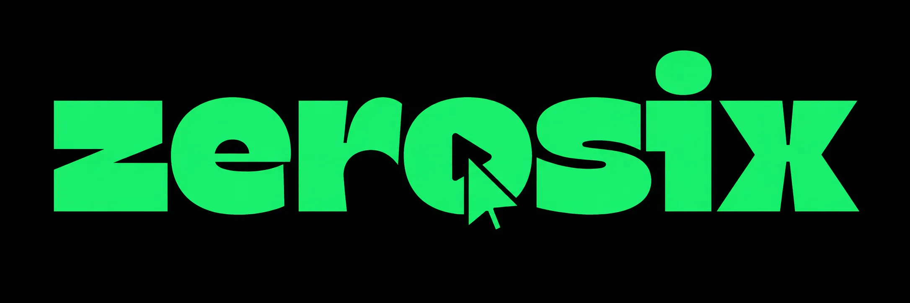

Avant d'appeler, beaucoup de clients vérifient en ligne.
Ce qu'ils trouvent, ou ne trouvent pas, influence déjà leur niveau de confiance.
Aujourd'hui, un client veut comprendre rapidement qui vous êtes, ce que vous faites, et s'il peut vous faire confiance.
Il entend
parler de vous
Il vous
cherche
Il décide s'il
vous contacte
Le client ne pense pas forcément que l'entreprise est mauvaise.
Il pense simplement : « Je ne sais pas assez. »
Aucun résultat clair
En quelques secondes, il doit répondre aux questions que le client se pose déjà.
Votre site doit rendre votre activité claire, crédible et facile à contacter.
Des services pensés pour vos clients.
Pas besoin d'un site compliqué. Il faut un site qui inspire confiance et guide le client vers l'action.
Avant de parler d'un projet complet, on peut préparer une première maquette.
Vous voyez concrètement à quoi votre présence en ligne pourrait ressembler.
Ensuite seulement, vous décidez si ça vaut la peine d'aller plus loin.
Quand quelqu'un vous cherche, il doit comprendre en quelques secondes pourquoi il peut vous faire confiance.
Zerosix, sites premium pour entreprises ambitieuses
